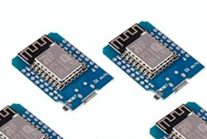

Capstone 11 Projects
This page provides a basic description of my Capstone 11 projects and a link to them.
Project 1: VR Full Body Trackers
I attempted to make a set of VR full body trackers using the framework provided by the SlimeVR project for the Personal Interest Capstone Project. It did not succeed due to receiving Dead On Arrival parts and other issues. Instead I made a video on how to prepare to start.
Project 2: Bike Generator

A bike generator that converts mechanical energy into electrical energy, for the Community Impact Capstone project with my group. We were not able to complete the project due to large delays and parts being stolen.